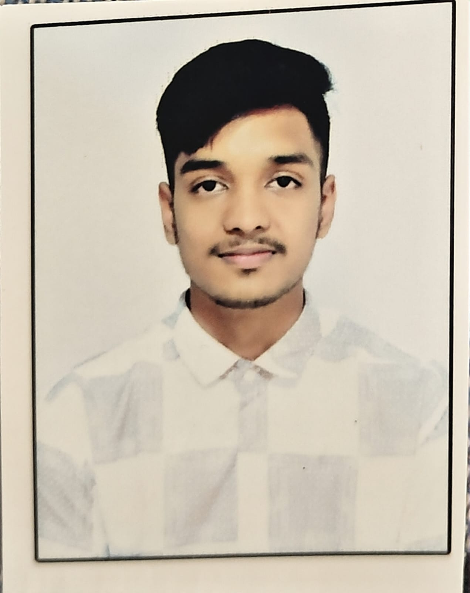

Naaga Sumukh B S
Builder · Innovator · Polymath
Founder of SachhAI & EasyHospital. Leader at Adwaitha. Connecting disciplines — AI, product, marketing, and leadership — to build things that matter.
Intro Video
Resume
What makes you want to build like a polymath?
I want to build like a polymath because I enjoy connecting different skills to solve real problems. I have explored AI, product building, system design, marketing, automation, leadership and communication through projects and experiences. From building SachhAI and EasyHospital to leading Adwaitha, organising events, creating collaborations, working in digital marketing and building my LinkedIn presence, I have learned that great ideas need more than technical skills. Losing my father taught me resilience and responsibility. I do not want to be the master of one trade. I want to be a jack of multiple trades, constantly learning, connecting disciplines, and building.